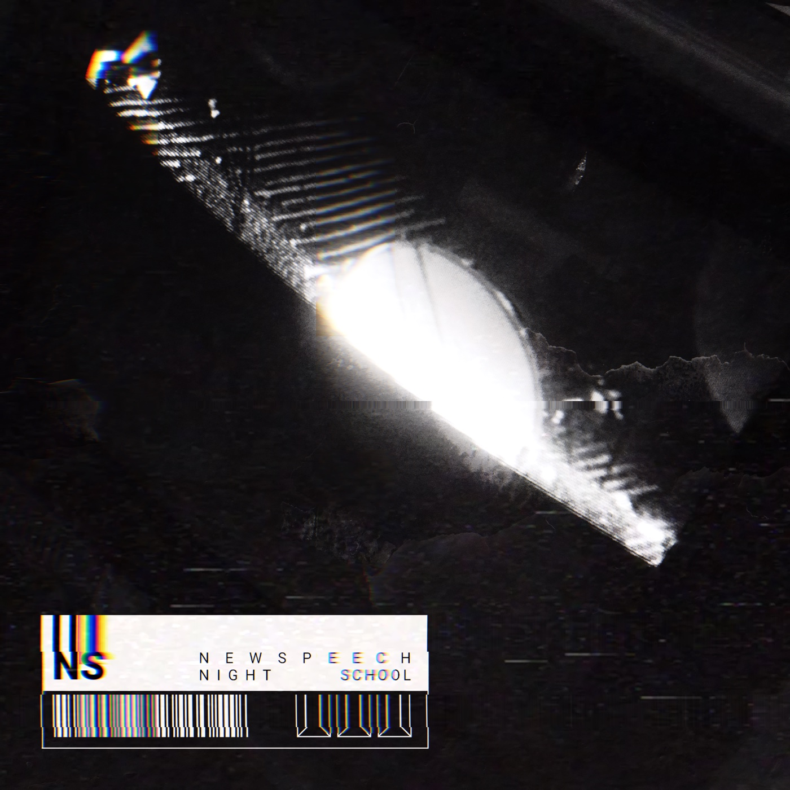

debut ep + remix

NIGHT SCHOOL is the debut newspeech EP: tracks built from a bespoke software sequencer, accompanied by live instruments, and finished through self authored destruction tools.
newspeech is Chris Elkjar's audio and video output, born out of experimentation during his decade plus spent playing guitar, bass and misc other things in THE ARMED.
newspeech is a band, a software sequencer, a set of destruction and loop-wear tools, a 24/7 generative broadcast programme, and records made with some combination of all of them. The practice is built around unsynced systems intersecting, with destruction, noise and wear as core materials.
all of these tools, plugins and software are freely available for anyone to use, create with, extend or enhance. Everything lives at newspeechsound.com.
RELEASE DAY
NIGHT SCHOOL goes on sale directly through Subvert, the artist-owned marketplace, and Bandcamp. No streaming yet: for one month the only ways to hear it are through these platforms or newspeechsound.com
RUIN - The album page is the listening experience: the record against its own live visuals, with the ruin control alongside. Ruined copies are shared as links that play back identically for anyone who opens them. album not to your taste? no worries, make it yours.
BROADCAST — the studio's autonomous set programme — streams the album's sequencer sessions live, varying the three songs continuously so no two passes are the same.
THE MONTH BETWEEN
The record was created out of the process of building SEQUENCE a software sequencer allowing users to create harmonically aware complex sequences through a simple UI. This tool is the core of the newspeech sound and ships with access to the sample library created for this record.
During the production of the record a series of browser based audio tools were created to help craft the sound of the album, these 5 tools are available free to use on newspeechsound.com
In addition a series of PLUGINS also arrived out of these sessions - taking the core ideas of the sequencer and browser tools and bringing them into your favorite DAW.
ONE MONTH LATER
NIGHT SCHOOL opens on streaming services — everywhere except Spotify. (fuck 'em)
Additionally, out of the month of destruction takes a companion album NIGHT SCHOOL[RUINED] is released across all platforms. This slowed, mangled and reverbed out bliss edition also lives on youtube.
On streaming release day BROADCAST also streams 24 hours of ruined editions of the songs.